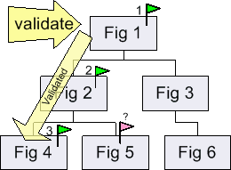

Layout is the process of determining the locations of figures in a drawing. This two step process includes marking figures as invalid (needing layout), and then validating the "branches" of figures that are invalid. Multiple updates to a drawing can result in multiple figures becoming invalid. To prevent intermediate states from being displayed to the user, Draw2d provides a deferred update strategy which integrates layout with native paint requests as well as figures requesting repaints. The result is that layouts occur all at once, after which the results are painted.
Figure delegates the task of placing children to their
LayoutManager. This allows layouts to be swapped and is also just
good separation of concerns. Layouts cannot be shared because they may cache
information about their owner.
Most layouts need to query the children for their size constraints. IFigure provides methods for querying the minimum, preferred, and maximum sizes. A figure such as Label will have a preferred size based on its text or icon being displayed. If a figure contains other figures, then its preferred size will be based on how it would like to arrange its children. In this case, the size requests are forwarded to the layout manager.
Hints can be used when querying preferred and minimum size. For example, if the amount of available width is know, this width can be passed to a figure which may be wrapping a paragraph of text. The figure would then return the height and width necessary to wrap the paragraph to the given amount of space.
When a figure is changed in a way that affects its preferred size or layout, it calls revalidate(). Revalidation is the process of marking yourself as invalid and requesting revalidate on your parent figure. This process continues up the parent chain until a figure which is either the root figure or a validate root adds itself to the update managers list of invalid figures. At a later time, the update manager will go through its collection of invalid figures and call validate() on them. In some cases invalid figures may be added or re-added during validation. The following image shows the chain of events:
|
 |
| A changes happens to Fig 4 that affects its preferred size. It calls revalidate(), which walks up the parent chain marking figures as invalid until a "root" is reached which is reported to the update manager. | The update manager validates the invalid branches. Layout happens top-down. Note the Fig 5 was not invalid, but if Fig 2 changes its size as a result of laying out, the Fig 5 will mark itself as invalid and get validated as part of the same pass. |
Most figures layout in a top-down order. This means that figure has its bounds set before it lays out its children. Also, after it places its children, it then calls validate() on them in case their size changed, making them invalid. This is the same way that Composites work in SWT.
In some cases, the top-down process is modified. A common example is figures whose bounds must wrap around the bounds of their children. Connections and "freeform" figures are examples of this behavior. In these cases, the figures layout children first, and then they determine their own bounds. Note that the children are not positioned relative to the bounds since it is unknown during layout.
The other special layout case is found in the text package. Text figures must layout in two steps. This allows words and word fragments to get reordered for bidirectional text, and for baselines and lines of text to be vertically and horizontally adjusted.